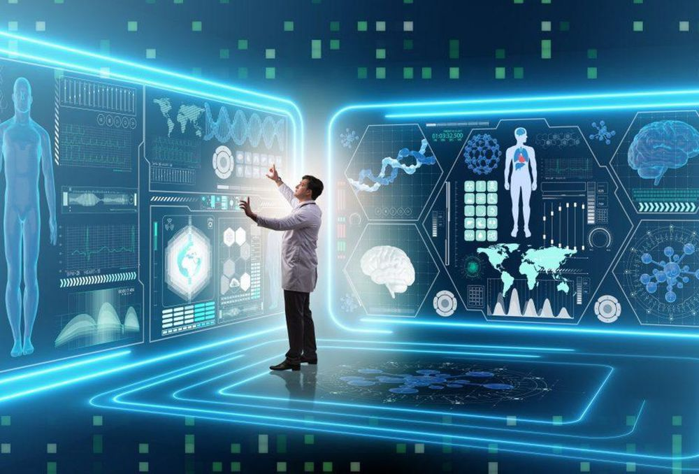

With the advent of technological efflux, artificial intelligence has appeared as a competitive edge in collecting and analyzing mega data in a business venture. Nevertheless, AI is now a driving force as a means to improve operations, replace tools and human labor in the cheapest and faster way, foster customer engagement, and optimize customers and industrial experiences. AI has gained popularity and confidence as a better tool in predicting behavior and competing with that of the human counterpart. As a result of that AI is resolving a lot of issues in a given system and carries out questionable decisions that seriously impact human lives. But the question is, should we not think about the impact of maximizing AI usages on humans lives? The probable answer could be the factor of optimization, quality control, and collaboration so that we can harness the power of AI to drive real impact in innovation, services, and development.

| Pros: | Cons: |
|---|---|
| Less room for errors | Expensive |
| Right decision making | Restricted functions |
| Can work for unlimited time (24*7) | Dependency on machines |
The artificial intelligence system is basically based on the mathematical algorithm that is capable enough in simulating human-like-decision making and execution of programmed tasks. Thus, the AI systems are programmed by professional experts but executed traditionally by the people with the expectation of getting a much higher level because of the speed and power available on modern computing platforms. An AI-based technology might be very simple or extremely complex. The impact of AI system renders the opportunities of modern customer interaction systems that can consistently improve performances through the interpretation of historical patterns, actions taken along with potential review to achieve successful outcomes, including advances in data processing speeds, cost-effectivity, big-data management, and integration of data science technology. Such a phenomenon has made practical AI for many organizations and has made it a potential tool for serving many more in the industry level. For example, Pega’s Adaptive Decision Manager. Pega’s sentiment analysis can determine whether a Tweet is positive, negative or intrinsically keeping a natural impression. This AI system connects the words and patterns in the text, and hence the sentiments in a given block of text.
Pega's Technology
Pega’s technology is a proven and authentic AI at some of the world’s organizations and is getting enormous business benefits. It relates to making high-relevant recommendation and adding intelligence to digital marketing. Pega’s technology is used for predicting the likelihood as a sales lead conversation and providing intelligent guidance to the agents. It is also optimizing customer’s life-time value and automate and streamline efficiency.
Health Care
In healthcare system, artificial intelligence is used as a means of complex algorithms and software to implicate human cognition in the complicated medical data analysis. Such process basically makes speculation or approximation in drawing a conclusion without intervention of human inputs. Significant advancement has been made in medicine that includes the uses of AI technology or automated processes in the diagnosis and treatment of patients in healthcare. Technically, in this system, AI uses multiple sources of data as to perform accurate diagnosis. There are a number of advancements of AI applications that have been made in medicine. AI has been applied for processing and analyzing experimental findings using multiple sources of data to make an appropriate diagnosis. It is also applying for decision support (Dxplain). Dxplain provides a list of possible diagnosis options and preparing and administering chosen treatment method. It is also being applied for patient monitoring, and postcare follow-up appointments, etc. The da Vinci robotic surgical system has robotic arms that precise movement and magnetized vision that allows doctors for precision surgery. It is the replacement of entirely manual operation system. In the case of therapy, AI-therapy is an online course for people struggling with social anxieties. AI is also in the Laboratory information systems. Germwatcher is designed to investigate microbial infections. And finally, AI applications reduces human error, for example Babylon is an online system where patients can book their appointments.